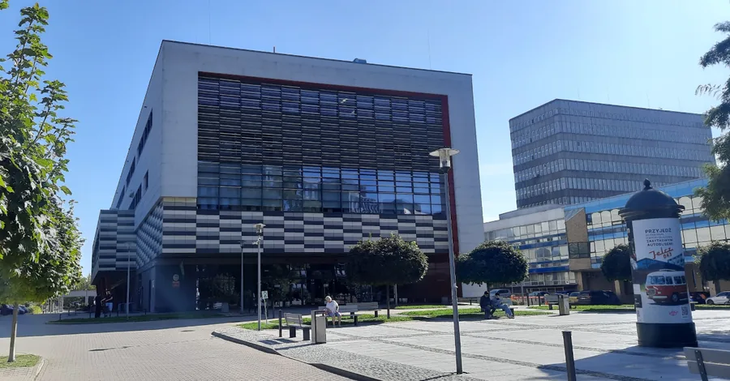

2026
Wydział Biotechnologii Uniwersytetu Wrocławskiego
- Inwestor
- Uniwersytet Wrocławski
- Zakres
- Modernizacja systemu kontroli dostępu w budynku Wydziału Biotechnologii przy ul. Joliot-Curie 14a we Wrocławiu.
Kontrola dostępu